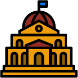
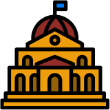
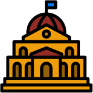

and Capitals .
The aim is to guess the corresponding country. Each game type will have a different corresponding country.
and Capitals .
The aim is to guess the corresponding country. Each game type will have a different corresponding country.
Welcome to WORLDLE.
There are three game types:
Countries ,
Flags and Capitals .
The aim is to guess the corresponding country. Each game type will have a different corresponding country.
There are two game modes:
Daily challenge  , which resets at midnight each day (your local time), and
Unlimited , which can be used to practice for daily challenges.
, which resets at midnight each day (your local time), and
Unlimited , which can be used to practice for daily challenges.
WORLDLE was originally created by @teuteuf. You can visit the original here.
This website was created by Ryan, from Adelaide, South Australia